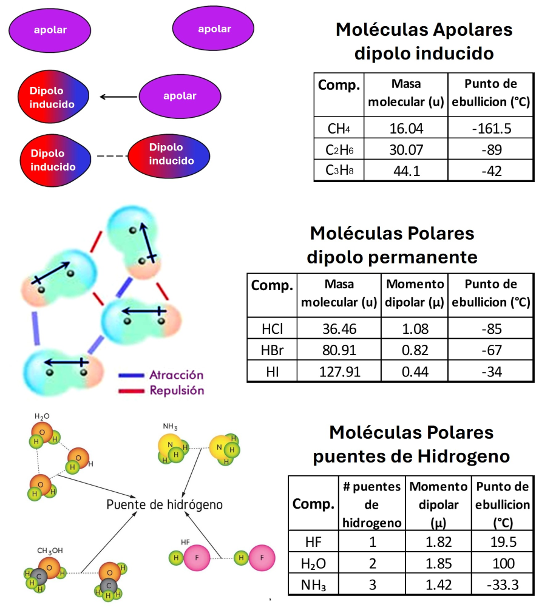
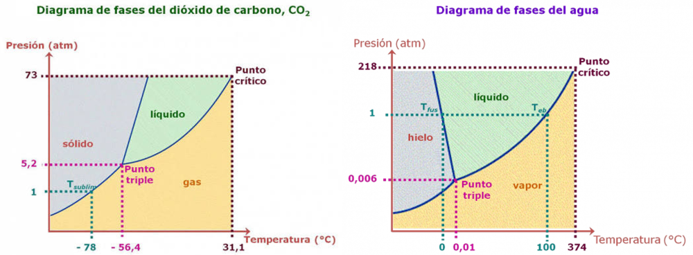
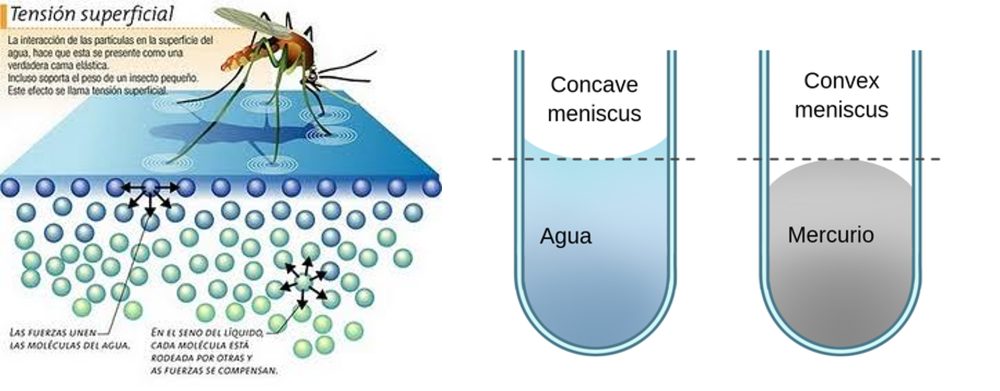
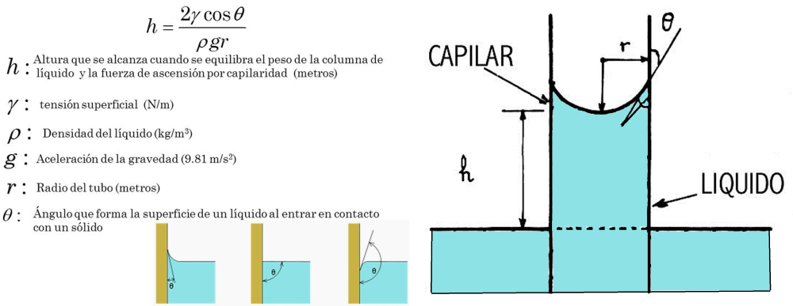
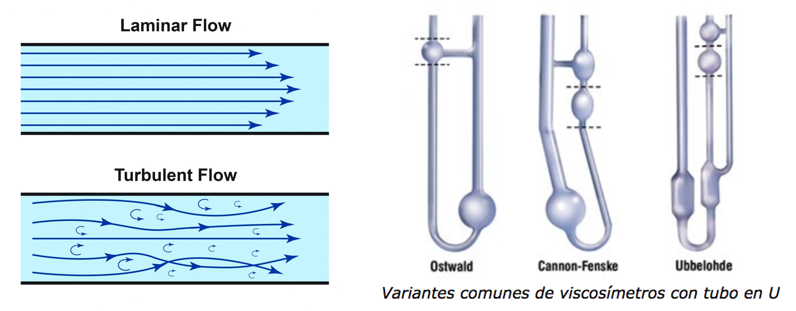
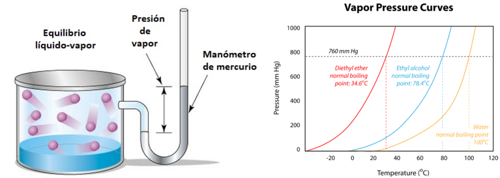
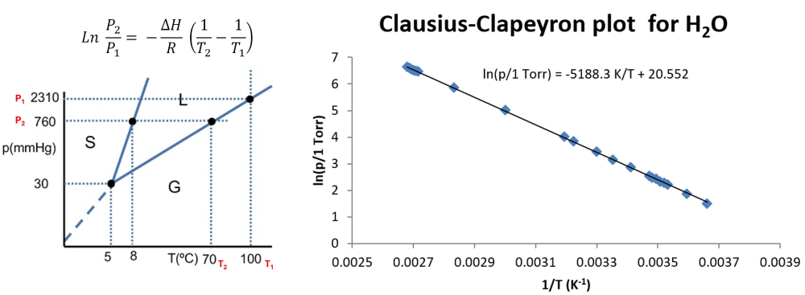

QUÍMICA II
De la molécula al bienestar — sintetiza la idea de progreso desde lo microscópico hacia lo humano.
Clase 1: Estado Líquido y Propiedades Fisicoquímicas
De la molécula al bienestar — sintetiza la idea de progreso desde lo microscópico hacia lo humano.
Clase 1: Estado Líquido y Propiedades Fisicoquímicas
| Tipo de Fuerza | Descripción y Presencia | Ejemplos |
|---|---|---|
| Dispersión o London | Presente en todas las moléculas. Es la única fuerza intermolecular en moléculas apolares. Aumenta con la masa molar. | Pentano ($C_5H_{12}$), $O_2$, $CO_2$, $CH_4$ |
| Dipolo - Dipolo | Presente en moléculas polares que no poseen enlace directo H-FON. Ocurre por atracción entre dipolos permanentes. | Ácido clorhídrico ($HCl$), $H_2S$, $CH_3Cl$ |
| Puente de Hidrógeno | Fuerza muy intensa en moléculas polares donde el Hidrógeno está unido covalentemente a Flúor, Oxígeno o Nitrógeno (FON). | Agua ($H_2O$), Etanol ($C_2H_5OH$), Amoniaco ($NH_3$) |

Figura 1: Comparación del origen de fuerzas intermoleculares en compuestos apolares y polares.
(a) $H_2O$: Es polar, el O tiene pares libres y el H está unido al O $\rightarrow$ Puente de Hidrógeno (más London y dipolo-dipolo).
(b) $HCl$: Es polar (dos átomos distintos), pero el H no está unido a F, O o N $\rightarrow$ Dipolo-Dipolo (más London).
(c) Pentano ($C_5H_{12}$): Es un hidrocarburo apolar $\rightarrow$ Únicamente Fuerzas de Dispersión de London.

Figura 2: Diagrama de fases P-T. El límite inferior del estado líquido es el punto triple; el límite superior es el punto crítico.

Figura 3: Las moléculas internas son atraídas en todas direcciones; las superficiales sufren fuerza neta hacia el interior.
| Propiedad | Fuerzas de Cohesión | Fuerzas de Adhesión |
|---|---|---|
| Definición | Atracción intermolecular entre moléculas semejantes del líquido. | Atracción entre moléculas distintas (líquido y pared del recipiente). |
| Agua en Vidrio | Adhesión > Cohesión $\rightarrow$ Moja el vidrio y forma un menisco cóncavo ($\theta \approx 0^\circ$). | |
| Mercurio en Vidrio | Cohesión > Adhesión $\rightarrow$ No moja el vidrio y forma un menisco convexo. | |

Figura 4: Equilibrio de fuerzas en el menisco de un tubo capilar de radio r.
Aplicando la fórmula despejada para el radio $r$:
$$\gamma = \frac{1}{2} r \cdot h \cdot d \cdot g \implies r = \frac{2 \gamma}{h \cdot d \cdot g}$$ $$r = \frac{2 \times 72.8 \text{ dina/cm}}{10 \text{ cm} \times 1 \text{ g/cm}^3 \times 980 \text{ cm/s}^2} = \frac{145.6}{9800} = 0.014857 \text{ cm} \approx 0.015 \text{ cm}$$ Convertimos a milímetros ($\times 10$): $$r = 0.015 \text{ cm} \times 10 \text{ mm/cm} = \mathbf{0.15 \text{ mm}}$$
Figura 5: Flujo laminar en un tubo circular (velocidad máxima en el centro, cero en la pared) y Viscosímetro de Ostwald.

Figura 6: Establecimiento de la presión de vapor en un manómetro libre de aire.

Figura 7: Regresión lineal de $\ln P$ en función de $1/T$. La pendiente de la recta es $-\Delta H_{vap} / R$.
1. Calculamos el cociente de presiones y su logaritmo natural:
$$\frac{P_2}{P_1} = \frac{37.6}{14.8} = 2.5405 \implies \ln(2.5405) = 0.9323$$2. Calculamos la diferencia de inversos de temperatura:
$$\left(\frac{1}{T_1} - \frac{1}{T_2}\right) = \left(\frac{1}{323.15} - \frac{1}{353.15}\right) = 0.0030945 - 0.0028317 = 0.0002628 \text{ K}^{-1}$$3. Despejamos $\Delta H_{vap}$:
$$\Delta H_{vap} = \frac{\ln(P_2/P_1) \cdot R}{\frac{1}{T_1} - \frac{1}{T_2}} = \frac{0.9323 \times 8.314 \text{ J/(mol}\cdot\text{K)}}{0.0002628 \text{ K}^{-1}} = 29493 \text{ J/mol} = \mathbf{29.49 \text{ kJ/mol}}$$Haz clic en cada nodo para desplegar u ocultar sus conceptos jerárquicos.
Haz clic en la tarjeta para voltearla y ver la respuesta. Evalúa tu dominio con los botones de abajo.
Usa la fórmula $2\gamma = r \cdot h \cdot d \cdot g$ en el sistema CGS.
Fórmula: $\ln(P_2/P_1) = \frac{\Delta H_{vap}}{R} \left(\frac{1}{T_1} - \frac{1}{T_2}\right)$
Relación: $\frac{\eta_1}{\eta_2} = \frac{d_1 \cdot t_1}{d_2 \cdot t_2}$ (tomando Líquido 2 como Agua de referencia).
Para que exista puente de hidrógeno, el átomo de $H$ debe estar unido covalentemente a Flúor (F), Oxígeno (O) o Nitrógeno (N). ¡Visualiza que el Hidrógeno habla por FON-o con ellos!
Cohesión: Atracción entre moléculas iguales (Líquido con Líquido).
Adhesión: Atracción con moléculas diferentes (Líquido pegado al Vidrio/Pared).
$2\gamma = r \cdot h \cdot d \cdot g$ $\rightarrow$ Mnemotecnia: "Dos Gatos Rabiosos Hacen Daño Grave" ($\gamma, r, h, d, g$).
Agua: Adhesión > Cohesión $\rightarrow$ Forma una sonrisa cóncava.
Mercurio: Cohesión > Adhesión $\rightarrow$ Forma un domo convexo.
La viscosidad $\eta$ es directamente proporcional al producto de la densidad por el tiempo de flujo ($\eta \propto d \cdot t$).
Haz clic en cada término para desplegar su definición formal:
Insertar $g = 9.81 \text{ m/s}^2$ en lugar de $g = 980 \text{ cm/s}^2$ cuando se trabaja con dina/cm, cm y g/cm³.
Usar temperaturas en Celsius directos en la fórmula $\ln(P_2/P_1) = \frac{\Delta H_{vap}}{R}(1/T_1 - 1/T_2)$.
Considerar que moléculas como el $HCl$ o el $CH_3F$ tienen puente de hidrógeno solo por tener Cl o F.
En cada ciclo se seleccionan 10 preguntas al azar de nuestra base de datos. Completa el cuestionario para revisar tus aciertos y recargar nuevas preguntas en el siguiente ciclo.